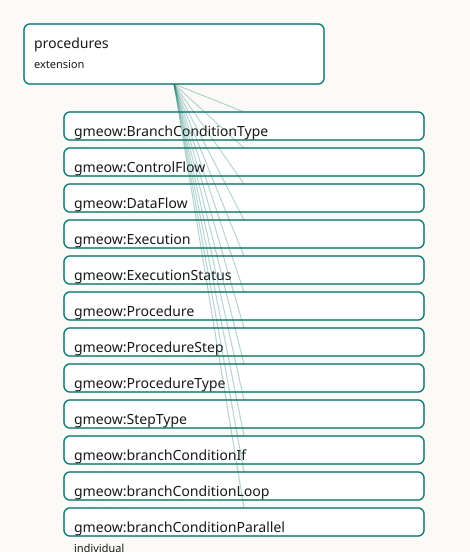

GMEOW Procedures Module
- IRI: https://blackcatinformatics.ca/gmeow/slices/procedures
- Tier: extension
Group: extensions
What This Slice Covers
This slice owns 72 terms and contributes 38 mapping or projection rows. Use it when its terms match the native fact you want to preserve; use the linkage tables to see how those facts leave GMEOW for consumer vocabularies.
Dependencies
Consumers
- The universal process/procedure/plan generalization for workflows and recipes.
Local Map

Terms
Classes
| Term | Label | Definition |
|---|---|---|
gmeow:BranchConditionType |
Branch Condition Type | The kind of guard condition on a control-flow edge — a VALUE, never a subclass. Evaluated solver-side (Principle 12). The set is open; new condition kinds are... |
gmeow:ControlFlow |
Control Flow | A reified relator that connects two ProcedureSteps in a control-flow relationship — sequencing, branching, or looping. Reuses the Participation idiom: mediates... |
gmeow:DataFlow |
Data Flow | A reified relator that connects a ProcedureStep's output to another ProcedureStep's input. Mediates a source step, a target step, and the data entity that flow... |
gmeow:Execution |
Execution | An event that enacts a Procedure or one of its ProcedureSteps. The execution side of the plan ⟂ execution de-conflation: an occurrence that realises a prescrip... |
gmeow:ExecutionStatus |
Execution Status | The status of an Execution occurrence — a VALUE, never a subclass. The set is open; new statuses are fresh individuals. |
gmeow:Procedure |
Procedure | A prescriptive specification — a template, recipe, protocol, blueprint, workflow definition, or pipeline spec. The plan side of the plan ⟂ execution de-conflat... |
gmeow:ProcedureStep |
Procedure Step | An atomic step within a Procedure. Carries inputs, outputs, and parameters. May itself reference a subprocess Procedure via gmeow:stepEnactsProcedure. The kind... |
gmeow:ProcedureType |
Procedure Type | The kind of a procedure — a VALUE, never a Procedure subclass. The set is open; a kind not among the seed individuals is a FRESH gmeow:ProcedureType individual... |
gmeow:StepType |
Step Type | The kind of a procedure step — a VALUE, never a ProcedureStep subclass. The set is open; a kind not among the seed individuals is a FRESH gmeow:StepType indivi... |
Properties
| Term | Label | Definition |
|---|---|---|
gmeow:dataFlowEntity |
data flow entity | The data entity that flows from the source step to the target step via a data-flow relator. Non-functional: multiple entities may flow on the same edge, and co... |
gmeow:dataFlowSource |
data flow source | The producing ProcedureStep of a data-flow relator. Functional: one source per data-flow edge. |
gmeow:dataFlowTarget |
data flow target | The consuming ProcedureStep of a data-flow relator. Functional: one target per data-flow edge. |
gmeow:executesProcedure |
executes procedure | Relates an Execution to the Procedure it enacts. Non-functional: an execution may enact multiple procedures (a combined run), and competing enactment claims co... |
gmeow:executesStep |
executes step | Relates an Execution to the specific ProcedureStep it enacts. Non-functional: an execution may enact multiple steps (a batch run), and competing enactment clai... |
gmeow:executionParticipant |
execution participant | An agent that took part in an execution — the flat 80%-case shortcut. Non-functional. Promote to a gmeow:Participation node when the role, period, confidence,... |
gmeow:executionStatus |
execution status | The status of an execution occurrence, drawn from the open gmeow:ExecutionStatus value vocabulary. Non-functional: competing assessments from different monitor... |
gmeow:flowGuard |
flow guard | The guard condition type on a control-flow edge. The actual truth evaluation (the condition expression, variable bindings, etc.) is solver-side (Principle 12);... |
gmeow:flowOrder |
flow order | An explicit ordering index on a control-flow edge, used when the graph structure alone is insufficient to determine sequence (e.g. linear pipelines). Optional;... |
gmeow:flowSource |
flow source | The source ProcedureStep of a control-flow relator. Functional: one source per control-flow edge. |
gmeow:flowTarget |
flow target | The target ProcedureStep of a control-flow relator. Functional: one target per control-flow edge. |
gmeow:hasProcedureStep |
has procedure step | Relates a Procedure to a step it contains. Specialisation of the universal gmeow:hasPart spine. |
gmeow:hasSubProcedure |
has sub-procedure | Relates a Procedure to a constituent subprocess Procedure; the transitive inverse of gmeow:subProcedureOf. |
gmeow:inquiryPriority |
inquiry priority | The priority of a research inquiry, on a 1–10 scale. Applies to Procedures of type researchPlan. |
gmeow:inquirySource |
inquiry source | The source that prompted the research inquiry — a document, observation, or tip. Applies to Procedures of type researchPlan. Reuses the sources module. |
gmeow:inquiryStatus |
inquiry status | The status of a research inquiry, drawn from the gmeow:ExecutionStatus value vocabulary. Applies to Procedures of type researchPlan. Non-functional: competing... |
gmeow:inquiryTheme |
inquiry theme | The thematic area or topic of a research inquiry. Applies to Procedures of type researchPlan. Open vocabulary — any literal is valid. |
gmeow:procedureStepOf |
procedure step of | Relates a ProcedureStep to the Procedure it is part of; the inverse of gmeow:hasProcedureStep. |
gmeow:procedureStepType |
procedure step type | The kind(s) of a procedure step, drawn from the open gmeow:StepType value vocabulary. Non-functional: a step may serve several purposes, and competing standpoi... |
gmeow:procedureType |
procedure type | The kind(s) of a procedure, drawn from the open gmeow:ProcedureType value vocabulary. Non-functional: a procedure may serve several purposes (a research plan t... |
gmeow:resolvedByArtifact |
resolved by artifact | The artifact — document, observation, claim, or other entity — that resolves the research inquiry. Applies to Procedures of type researchPlan. Non-functional:... |
gmeow:stepEnactsProcedure |
step enacts procedure | Relates a ProcedureStep to the subprocess Procedure it enacts. Used when a step is a subprocess (gmeow:stepTypeSubprocess): the step references the Procedure t... |
gmeow:stepInput |
step input | An entity consumed by a procedure step — a dataset, ingredient, document, tool, or any other resource. Range is owl:Thing to admit any input type. Non-function... |
gmeow:stepOutput |
step output | An entity produced by a procedure step — a derived dataset, claim, event, observation, or artifact. Range is owl:Thing. Non-functional: a step may have multipl... |
gmeow:stepParameter |
step parameter | A configurable parameter of a procedure step — a setting, threshold, or variable that governs the step's behaviour without being consumed as input. Range is ow... |
gmeow:subProcedureOf |
sub-procedure of | Relates a Procedure to a larger Procedure it is part of — subprocess composition. Transitive: a part of a part is a part. Specialisation of the universal gmeow... |
Individuals
| Term | Label | Definition |
|---|---|---|
gmeow:branchConditionIf |
if | A conditional if-then branch. |
gmeow:branchConditionLoop |
loop | An iterative loop-back branch. |
gmeow:branchConditionParallel |
parallel | A parallel split or join branch. |
gmeow:branchConditionSwitch |
switch | A multi-way switch branch. |
gmeow:executionStatusCancelled |
cancelled | The execution was cancelled before completion. |
gmeow:executionStatusFailed |
failed | The execution failed or aborted. |
gmeow:executionStatusPending |
pending | The execution is scheduled but has not started. |
gmeow:executionStatusRunning |
running | The execution is currently in progress. |
gmeow:executionStatusSkipped |
skipped | The execution was skipped (e.g. by a branch guard). |
gmeow:executionStatusSucceeded |
succeeded | The execution completed successfully. |
gmeow:flowIngestion1 |
ingestion 1 | The ingestion 1 control flow — a named stage or pattern in a procedural or data-ingestion pipeline. |
gmeow:flowIngestion2 |
ingestion 2 | The ingestion 2 control flow — a named stage or pattern in a procedural or data-ingestion pipeline. |
gmeow:flowIngestion3 |
ingestion 3 | The ingestion 3 control flow — a named stage or pattern in a procedural or data-ingestion pipeline. |
gmeow:flowIngestion4 |
ingestion 4 | The ingestion 4 control flow — a named stage or pattern in a procedural or data-ingestion pipeline. |
gmeow:flowIngestion5 |
ingestion 5 | The ingestion 5 control flow — a named stage or pattern in a procedural or data-ingestion pipeline. |
gmeow:procedureIngestionCanonical |
Canonical Ingestion Procedure | A worked-example ingestion procedure that supersedes the 'source-packet bundle' idea. Six sequential steps from raw-root acquisition to privacy-posture assessm... |
gmeow:procedureIngestionRawRoot |
raw root data source | The raw root data source produced by the ingestion procedure. |
gmeow:procedureTypeAgentFlow |
agent flow | An LLM or software-agent orchestration flow. |
gmeow:procedureTypeBusinessProcess |
business process | A business process or workflow (BPMN). |
gmeow:procedureTypeCiBuild |
CI build | A continuous-integration or build pipeline. |
gmeow:procedureTypeDataPipeline |
data pipeline | A data-ingestion, ETL, or transformation pipeline. |
gmeow:procedureTypeIngestion |
ingestion | A source-packet ingestion or import procedure. |
gmeow:procedureTypeLabProtocol |
lab protocol | A laboratory protocol or experimental procedure (OBI). |
gmeow:procedureTypeRecipe |
recipe | A cooking recipe or culinary procedure. |
gmeow:procedureTypeResearchPlan |
research plan | A planned inquiry, open lead, or research question. |
gmeow:stepIngestionDerivedClaims |
derived claims / events generation | Generate derived claims and events from extracted text. |
gmeow:stepIngestionFileCopy |
file copy / staging | Copy and stage files from the raw root. |
gmeow:stepIngestionOcrExtract |
OCR / text extraction | Perform OCR and extract text from staged files. |
gmeow:stepIngestionPrivacyPosture |
privacy posture assessment | Assess the privacy posture of the ingested data and derived claims. |
gmeow:stepIngestionRawRoot |
raw root acquisition | Acquire the raw root data source. |
gmeow:stepIngestionUnresolvedLeads |
unresolved leads identification | Identify unresolved leads from the generated claims. |
gmeow:stepTypeAtomic |
atomic step | An atomic, indivisible action step. |
gmeow:stepTypeBranch |
branch step | A guarded decision point (BPMN gateway). Must be the source of at least two ControlFlow relators. |
gmeow:stepTypeEnd |
end step | The terminal point of a procedure. |
gmeow:stepTypeParallel |
parallel step | A fork or join point for parallel execution. |
gmeow:stepTypeStart |
start step | The entry point of a procedure. |
gmeow:stepTypeSubprocess |
subprocess step | A step that is itself a Procedure, enacted via gmeow:stepEnactsProcedure. |
Linkages
- Rows: 38
- Projection profiles:
schema-org - External vocabularies:
bpmn,obi,opmw,pplan,prov,rdf,ro_crate,schema
| Source | Kind | Profile | Predicate/Relation | Target | Evidence |
|---|---|---|---|---|---|
gmeow:ControlFlow |
equivalence | - |
skos:relatedMatch | bpmn:sequenceFlow | gmeow-procedures.sssom.tsv; gmeow:eqProc024; confidence 0.7 |
gmeow:ControlFlow |
equivalence | - |
skos:relatedMatch | pplan:precededBy | gmeow-procedures.sssom.tsv; gmeow:eqProc006; confidence 0.6 |
gmeow:DataFlow |
equivalence | - |
skos:relatedMatch | bpmn:dataAssociation | gmeow-procedures.sssom.tsv; gmeow:eqProc025; confidence 0.6 |
gmeow:Execution |
equivalence | - |
skos:closeMatch | obi:0000011 | gmeow-procedures.sssom.tsv; gmeow:eqProc022; confidence 0.8 |
gmeow:Execution |
equivalence | - |
skos:closeMatch | opmw:WorkflowExecution | gmeow-procedures.sssom.tsv; gmeow:eqProc019; confidence 0.8 |
gmeow:Execution |
equivalence | - |
skos:closeMatch | pplan:Activity | gmeow-procedures.sssom.tsv; gmeow:eqProc003; confidence 0.8 |
gmeow:Execution |
equivalence | - |
skos:closeMatch | prov:Activity | gmeow-procedures.sssom.tsv; gmeow:eqProc008; confidence 0.85 |
gmeow:Execution |
equivalence | - |
skos:relatedMatch | ro_crate:CreateAction | gmeow-procedures.sssom.tsv; gmeow:eqProc026; confidence 0.7 |
gmeow:Procedure |
equivalence | - |
skos:closeMatch | obi:0000272 | gmeow-procedures.sssom.tsv; gmeow:eqProc021; confidence 0.85 |
gmeow:Procedure |
equivalence | - |
skos:closeMatch | opmw:WorkflowTemplate | gmeow-procedures.sssom.tsv; gmeow:eqProc018; confidence 0.8 |
gmeow:Procedure |
equivalence | - |
skos:closeMatch | pplan:Plan | gmeow-procedures.sssom.tsv; gmeow:eqProc001; confidence 0.85 |
gmeow:Procedure |
equivalence | - |
skos:closeMatch | prov:Plan | gmeow-procedures.sssom.tsv; gmeow:eqProc007; confidence 0.8 |
gmeow:Procedure |
equivalence | - |
skos:closeMatch | schema:HowTo | gmeow-procedures.sssom.tsv; gmeow:eqProc011; confidence 0.85 |
gmeow:Procedure |
equivalence | - |
skos:closeMatch | schema:Recipe | gmeow-procedures.sssom.tsv; gmeow:eqProc012; confidence 0.9 |
gmeow:ProcedureStep |
equivalence | - |
skos:closeMatch | opmw:WorkflowTemplateProcess | gmeow-procedures.sssom.tsv; gmeow:eqProc020; confidence 0.75 |
gmeow:ProcedureStep |
equivalence | - |
skos:closeMatch | pplan:Step | gmeow-procedures.sssom.tsv; gmeow:eqProc002; confidence 0.85 |
gmeow:ProcedureStep |
equivalence | - |
skos:closeMatch | schema:HowToStep | gmeow-procedures.sssom.tsv; gmeow:eqProc013; confidence 0.85 |
gmeow:hasProcedureStep |
equivalence | - |
skos:closeMatch | schema:step | gmeow-procedures.sssom.tsv; gmeow:eqProc017; confidence 0.85 |
gmeow:stepInput |
equivalence | - |
skos:closeMatch | pplan:Input | gmeow-procedures.sssom.tsv; gmeow:eqProc004; confidence 0.8 |
gmeow:stepInput |
equivalence | - |
skos:closeMatch | prov:used | gmeow-procedures.sssom.tsv; gmeow:eqProc009; confidence 0.7 |
gmeow:stepInput |
equivalence | - |
skos:closeMatch | schema:supply | gmeow-procedures.sssom.tsv; gmeow:eqProc014; confidence 0.7 |
gmeow:stepInput |
equivalence | - |
skos:closeMatch | schema:tool | gmeow-procedures.sssom.tsv; gmeow:eqProc015; confidence 0.7 |
gmeow:stepOutput |
equivalence | - |
skos:closeMatch | pplan:Output | gmeow-procedures.sssom.tsv; gmeow:eqProc005; confidence 0.8 |
gmeow:stepOutput |
equivalence | - |
skos:closeMatch | prov:wasGeneratedBy | gmeow-procedures.sssom.tsv; gmeow:eqProc010; confidence 0.7 |
| ... | ... | ... | ... | ... | 14 more rows |
Guide
Procedures — alignment & projection reference
The alignment and projection companion to the procedures module
(ontology/modules/procedures.ttl). Everything here is authored once in
mapping-dsl/ and generated by gmeow compile-mappings (Principle 4); nothing in
mappings/, projections/, or queries/projections/ is hand-edited.
The plan ⟂ execution de-conflation
GMEOW models occurrences richly — gmeow:Event, gmeow:Participation,
gmeow:Activity, the Allen interval relations — but until now it had no
prescriptive layer. This slice introduces the plan ⟂ execution split:
| Plan (prescriptive) | Execution (occurrence) |
|---|---|
gmeow:Procedure (⊑ InformationObject) |
gmeow:Execution (⊑ Event) |
gmeow:ProcedureStep (⊑ InformationObject) |
enacted by an Execution |
gmeow:ControlFlow / gmeow:DataFlow (relators) |
temporal ordering via Allen relations |
One recipe, many prepared meals; one protocol, many runs; one pipeline spec, many ingestions. The plan side stays in the OWL 2 DL TBox as structure; the execution side reuses the existing event + participation machinery.
Terms
| Term | Kind | Role |
|---|---|---|
gmeow:Procedure |
class (gufo:Kind ⊑ gmeow:InformationObject) |
the prescriptive spec (template / recipe / protocol / blueprint / workflow definition) |
gmeow:ProcedureStep |
class (gufo:Kind ⊑ gmeow:InformationObject) |
an atomic step within a procedure |
gmeow:Execution |
class (gufo:EventType ⊑ gmeow:Event) |
an event that enacts a Procedure or Step |
gmeow:ControlFlow |
class (gufo:Kind ⊑ gufo:Relator) |
reified relator connecting two steps in control-flow order |
gmeow:DataFlow |
class (gufo:Kind ⊑ gufo:Relator) |
reified relator connecting a step's output to another step's input |
gmeow:ProcedureType / StepType / BranchConditionType / ExecutionStatus |
value vocabularies (gufo:QualityValue) |
open type/kind/status values (Principle 9) |
gmeow:hasProcedureStep / procedureStepOf |
object properties (not transitive) | procedure-step mereology |
gmeow:subProcedureOf / hasSubProcedure |
transitive object properties | recursive subprocess composition |
gmeow:stepInput / stepOutput / stepParameter |
object properties | step inputs, outputs, and parameters |
gmeow:executesProcedure / executesStep |
object properties | links an Execution to the plan it enacts |
gmeow:flowSource / flowTarget / flowGuard / flowOrder |
properties on ControlFlow |
control-flow relator structure |
gmeow:dataFlowSource / dataFlowTarget / dataFlowEntity |
properties on DataFlow |
data-flow relator structure |
gmeow:executionParticipant |
object property | flat shortcut for agent/tool assignment to an Execution |
gmeow:inquiryPriority / inquiryTheme / inquirySource / inquiryStatus / resolvedByArtifact |
properties on Procedure |
research-inquiry profile extensions |
SSSOM alignments (mapping-dsl/equivalences/procedures.ttl)
All by reference (Principle 5) — GMEOW never imports an external axiom. Compiled to
mappings/gmeow-procedures.sssom.tsv (26 rows).
| GMEOW | predicate | external target |
|---|---|---|
gmeow:Procedure |
closeMatch | pplan:Plan, prov:Plan, schema:HowTo, schema:Recipe, opmw:WorkflowTemplate, obi:OBI_0000272 (protocol) |
gmeow:ProcedureStep |
closeMatch | pplan:Step, schema:HowToStep, opmw:WorkflowTemplateProcess |
gmeow:Execution |
closeMatch | pplan:Activity, prov:Activity, opmw:WorkflowExecution, obi:OBI_0000011 (planned process) |
gmeow:stepInput |
closeMatch | pplan:Input, prov:used, schema:supply, schema:tool |
gmeow:stepOutput |
closeMatch | pplan:Output, prov:wasGeneratedBy, schema:result |
gmeow:ControlFlow |
relatedMatch | pplan:precededBy, bpmn:sequenceFlow |
gmeow:DataFlow |
relatedMatch | bpmn:dataAssociation |
gmeow:hasProcedureStep |
closeMatch | schema:step |
gmeow:stepTypeBranch |
relatedMatch | bpmn:gateway |
gmeow:Execution |
relatedMatch | ro-crate:CreateAction (Workflow-Run profile) |
Standards bridged
- P-Plan (
pplan:) — the closest peer model:Plan,Step,Activity,Input,Output,Variable,precededBy. - PROV-O (
prov:) —Plan,Activity,used,wasGeneratedBy. - schema.org (
schema:) —HowTo,HowToStep,HowToTool,HowToSupply,Recipe,Action. - OPMW (
opmw:) —WorkflowTemplate,WorkflowExecution,WorkflowTemplateProcess. - OBI (
obi:) —protocol(OBI:0000272),planned process(OBI:0000011). - BPMN (
bpmn:) — conceptual alignment togateway,sequenceFlow,dataAssociation. - RO-Crate Workflow-Run —
CreateActionfor reproducibility.
Projections (mapping-dsl/projections/schema-org-procedures.ttl)
Compiled into projections/schema-org.edoal.ttl and
queries/projections/schema-org.rq (the procedure branch is emitted alongside
all other schema-org projections).
| GMEOW | schema.org target | lossiness |
|---|---|---|
Procedure (default) |
schema:HowTo |
— |
Procedure (type = recipe) |
schema:Recipe |
type-driven dispatch |
ProcedureStep |
schema:HowToStep |
— |
hasProcedureStep |
schema:step |
— |
stepInput |
schema:supply / schema:tool |
typed collapse |
stepOutput |
schema:result |
— |
Execution |
schema:Action |
plan/execution split flattened |
Seed profiles
Two worked-example profiles demonstrate the generalisation:
Ingestion-process profile
Supersedes the "source-packet bundle" idea. A Procedure of type ingestion with
six sequential steps connected by ControlFlow relators:
- raw root acquisition
- file copy / staging
- OCR / text extraction
- derived claims / events generation
- unresolved leads identification
- privacy posture assessment
Research-inquiry profile
Supersedes the flat research-queue. A Procedure of type researchPlan with
profile-specific properties:
inquiryPriority— 1–10 scaleinquiryTheme— thematic area (open vocab)inquirySource— the source that prompted the inquiryinquiryStatus— pending / running / succeeded / failed / …resolvedByArtifact— the artifact that resolves the inquiry
Solver-side concerns (Principle 12)
The OWL 2 DL core holds structure only. The following are computed, not asserted:
Branchguard evaluation — theflowGuardrecords the condition type; the actual truth evaluation (expression, variable bindings) is solver-side.- Data-type compatibility — a
DataFlowwhose source-step output type mismatches the consumer-step input type produces a warning in the SHACL / solver layer, not an OWL inconsistency. - Step scheduling / ordering —
flowOrderprovides an explicit index when needed; the default ordering is theControlFlowgraph structure plus Allen relations at theExecutionlevel.